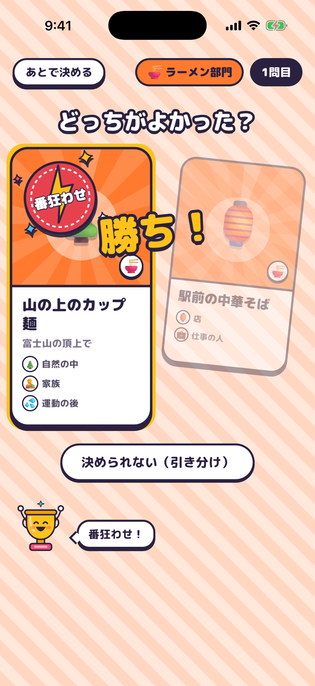
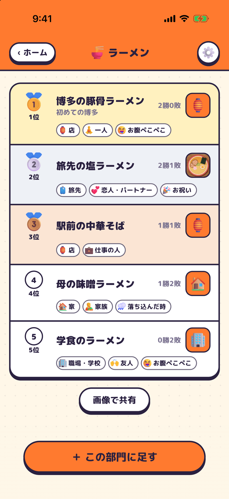

あの時がいちばん App Storeで公開中
思い出の体験を2択でランキング作成
自然の中で食べたカップ麺が、店のラーメンより上に来ることも。
心に残った体験を、その時の場面ごと残して、「どっちがよかった？」の2択で順位を決めるアプリです。同じカップ麺でも、家で食べたのと自然の中で食べたのは全くの別物。値段や評判ではなく、その時の自分の感覚、直感でどうだったかで比べます。
2枚から、よかったほうを選ぶだけ

選んでいくと、自分だけの順位表に

こんな方に
- 食べ歩きや旅行、キャンプや温泉の話を、人にするのが好き
- 「今までで一番おいしかったラーメンは？」と聞かれて、すぐ答えたい
- 点数をつけるのは苦手でも、2つのうちどっちがよかったかなら選べる
使い方
- 体験を書く（「何を」だけでも大丈夫です）
- 2枚の札から、よかったほうを選ぶ
- ラーメンでも、風呂でも、景色でも。部門ごとに順位表ができていきます
思いがけない結果になると、スタンプが押されます。どんなスタンプが出るかは、使ってみてのお楽しみです。
安心して使えます
- 体験も写真も、この端末の中だけに保存されます。アカウントもサーバーもありません
- 広告はありません。使い方を集める仕組みも入れていません
料金
- 体験10件までは無料です
- 買い切りの Pro（一度のご購入）で、体験を何件でも記録でき、自分の好みの傾向も見られます
- 月額はありません
ダウンロード
スマホのカメラでQRコードを読み取ると、App Storeのページが開きます。